อบรมการใช้งานระบบติดตาม PA
สำหรับเจ้าหน้าที่หน่วยงาน (requester) · เรียนรู้ด้วยตนเองได้ · ใช้ประกอบการบรรยายในห้องอบรม
ระบบ PA คืออะไร และทุกส่วนต่อกันอย่างไร
PA (Performance Agreement · ข้อตกลงการปฏิบัติงาน) คือระบบติดตามผลการดำเนินงานของหน่วยงานตาม PA ที่รับผิดชอบในแต่ละปีงบประมาณ — PA ของแต่ละหน่วยงานคือชุดตัวชี้วัดที่มีเป้าหมายและน้ำหนัก บทบาทของคุณคือ requester ผู้กรอกผลดำเนินงานของหน่วยงานตนเอง การฝึกทั้งหมดในวันนี้ทำบนระบบจริงที่ pa.kmutt.ac.th จึงต้องทำตามกติกาในหัวข้อถัดไปอย่างเคร่งครัด
โมดูล M0–M5 ทั้งหมดไม่ได้แยกกัน แต่ต่อกันเป็น วงจรเดียว — อ่านภาพนี้เป็นแผนที่ไปแต่ละโมดูลได้
ทำไมต้องทำให้ครบวงจร
PA คือภาพสะท้อนผลงานของหน่วยงานต่อมหาวิทยาลัยในแต่ละปีงบประมาณ การกรอกผลให้ตรงรอบจึงไม่ใช่แค่งานเอกสาร แต่คือการทำให้ ผลลัพธ์ ของหน่วยงานสะท้อนความจริง
เมื่อกรอกตรงเวลา ผลจะเข้ารายงานทันรอบ หน่วยงานเห็นสถานะของตนเองได้ชัด และปรับแผนได้ทันก่อนสิ้นปี — ยิ่งวงจรนี้เดินสม่ำเสมอ ภาพรวมของหน่วยงานก็ยิ่งแม่นและใช้ตัดสินใจได้จริง
สรุป 3 ขั้นตอนสำคัญที่ควรจดจำ: เข้าสู่ระบบ → เปิดดู PA → กรอกผล + บันทึกร่าง
กติกาของวันนี้
กรอกผล (M4) กด "บันทึกร่าง" เท่านั้น อย่ากด "ส่งรายงาน"
โครงการ (M3) คงไว้เป็นฉบับร่าง อย่ากด "บันทึกและส่งโครงการ"
คำขอเปลี่ยน PA (M2) เข้าคิวถึงผู้ดูแลจริง ส่งเฉพาะที่ต้องการแก้จริง
แต่ละโมดูลมีป้ายกำกับบอกไว้ที่หัวข้อด้วย เช่น "บันทึกร่างเท่านั้น" หรือ "อย่ายืนยันส่ง"
เข้าสู่ระบบ
ก่อนเข้าวงจร — เข้าสู่ระบบครั้งเดียว แล้วใช้งานทุกส่วนได้ตลอดทั้งปี
เป้าหมาย: เข้าสู่ระบบและตั้งรหัสผ่านครั้งแรกได้ด้วยตนเอง
เข้าระบบด้วยอีเมล มจธ. ที่ pa.kmutt.ac.th ผู้ใช้ใหม่จะได้รับอีเมลคำเชิญเพื่อตั้งรหัสผ่าน ส่วนผู้ที่ลืมรหัสผ่านขอใหม่ได้เอง
สาธิต
- กรอก อีเมล + รหัสผ่าน แล้วกด "เข้าสู่ระบบ"
- คนใหม่: เปิดอีเมลคำเชิญ ตั้ง รหัสผ่านใหม่ (อย่างน้อย 8 ตัว) แล้วกด "บันทึกรหัสผ่าน"
- ลืมรหัสผ่าน: กด "ลืมรหัสผ่าน?" กรอกอีเมล แล้วกด "ส่งลิงก์"
ลิงก์ตั้ง/รีเซ็ตรหัสต้องเปิดในเบราว์เซอร์เดียวกับที่กดขอ ไม่งั้นจะขึ้น "ลิงก์ไม่สามารถใช้ได้ในเบราว์เซอร์นี้…"
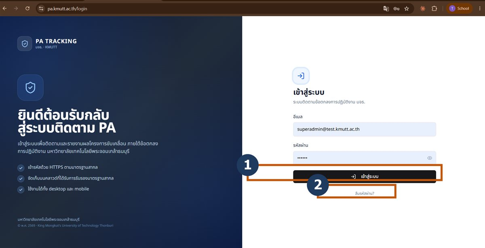
อ่าน PA ของหน่วยงาน
ต้นวงจร — ทุกครั้งก่อนกรอก เปิดดูว่ามีตัวชี้วัดอะไร เป้าหมายเท่าไร น้ำหนักเท่าไร
เป้าหมาย: อ่าน PA ของหน่วยงานได้ ทราบว่ามีตัวชี้วัดใดบ้าง เป้าหมายเท่าไร น้ำหนักเท่าไร และรายการใดยังไม่ได้กรอก
แนวคิด: PA ของหน่วยงานคือชุดของหลาย ตัวชี้วัด แต่ละตัวมี เป้าหมาย และ น้ำหนัก (รวมทุกตัว = 100%) ผลที่กรอกจะถูกแปลเป็น ผลลัพธ์ (ไฟเขียว/เหลือง/แดง) โดยมี สถานะ ของการทำงานกำกับแยกอีกแกน
หน้าที่ 1 — ภาพรวมผลดำเนินงาน (/dashboard)
ตารางคะแนนของทุกตัวชี้วัด คอลัมน์สำคัญคือ ผลลัพธ์ (ไฟเขียว/เหลือง/แดง) สถานะ และ งวด (รอบล่าสุดที่กรอก) คลิกชื่อตัวชี้วัด เพื่อเปิดหน้ากรอกผล PA
"ผลลัพธ์" กับ "สถานะ" อยู่คนละแกนกัน ดูภาพเทียบสองคอลัมน์นี้ได้ที่ M5 · ติดตาม & รายงาน
หน้าที่ 2 — ตัวชี้วัดของหน่วยงาน (/my-pa)
สรุปด้านบนบอก "ตัวชี้วัด N รายการ · น้ำหนักรวม X%" ซึ่งจะกลายเป็นสีเหลืองเมื่อน้ำหนักรวมไม่เท่ากับ 100% ใต้ลงมาเป็นตารางเป้าหมายและน้ำหนักรายตัว
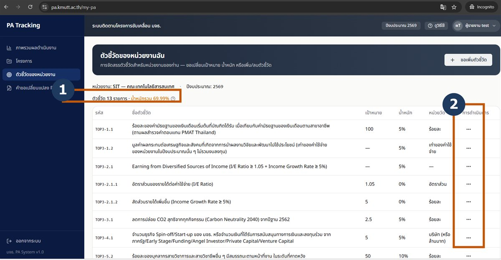
เปิด /my-pa ดูว่าหน่วยงานมีกี่ตัวชี้วัด น้ำหนักรวมเท่าไร แล้วเปิด /dashboard ดูว่ารายการใดที่คอลัมน์ "งวด" ยังเป็น —
น้ำหนักของตัวชี้วัดทุกตัวในหน่วยงานรวมกันควรเท่ากับเท่าไร?
เฉลย: น้ำหนักรวมทุกตัวชี้วัด = 100% — ถ้าไม่ครบ 100% สรุปด้านบนของหน้า "ตัวชี้วัดของหน่วยงาน" จะกลายเป็นสีเหลือง
คำขอเปลี่ยนแปลง PA
สาขา เมื่อมีเหตุ — ใช้เมื่อต้องแก้เป้าหมาย/น้ำหนัก หรือเพิ่ม-ลบตัวชี้วัด ไม่ได้ทำทุกรอบ
เป้าหมาย: ปรับ PA ของหน่วยงานให้ถูกต้องได้ เปลี่ยนเป้าหมาย น้ำหนัก เพิ่มหรือลบตัวชี้วัด แล้วติดตามสถานะคำขอ
แนวคิด: แก้ตัวเลขในตารางเองไม่ได้ ต้องส่ง "คำขอเปลี่ยนแปลง" ซึ่งตามปกติจะ เข้าคิวให้ผู้ดูแลพิจารณา ไม่ได้มีผลกับ PA ทันที
คำขอมี 4 แบบ — ที่ /my-pa
กดเมนู "การดำเนินการ" (จุด 3 จุด) ได้ 3 แบบแรก ส่วนแบบที่ 4 อยู่ที่ปุ่ม "ขอเพิ่มตัวชี้วัด" ด้านบน ทุกแบบต้องกรอก ค่าใหม่ + เหตุผล* แล้วกด "ส่งคำขอ"
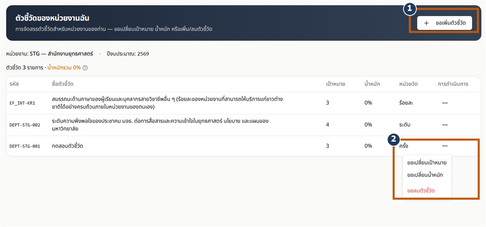
ตัวชี้วัดที่ยังไม่มีในระบบ
ในหน้า "ขอเพิ่มตัวชี้วัด" เปิดสวิตช์ "สร้างตัวชี้วัดใหม่ (ไม่อยู่ในรายการ)" แล้วกรอกชื่อ หน่วยวัด และรอบ ระบบจะสร้างรหัสให้อัตโนมัติในรูปแบบ DEPT-xxx-NNN
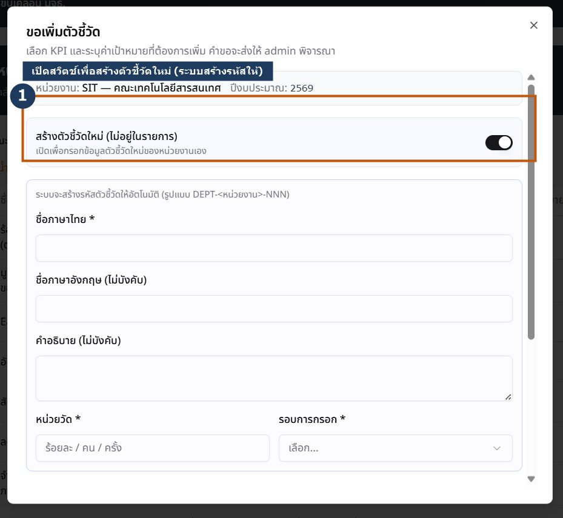
ส่งคำขอ แล้วตามผล
ทุกคำขอเปิดเป็นกล่องกรอกค่าใหม่พร้อมเหตุผล เมื่อส่งแล้วติดตามสถานะได้ที่ /my-change-requests
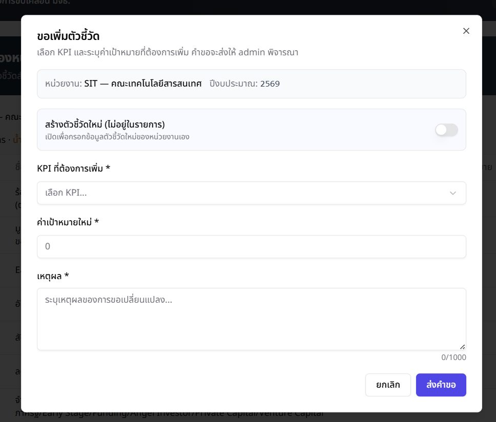
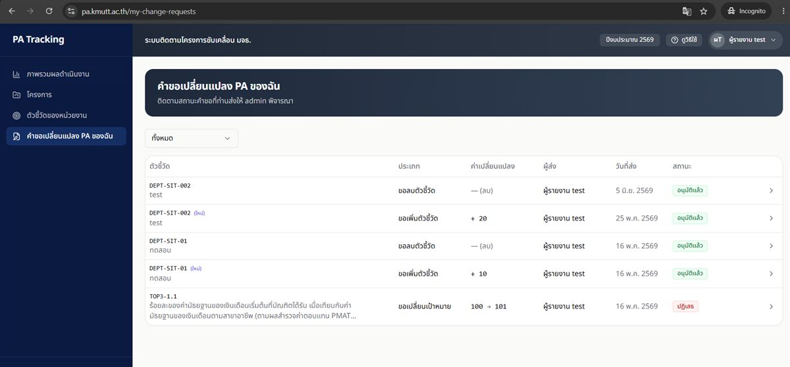
ทบทวน PA จาก M1 หากต้องแก้ (เช่น น้ำหนักรวมยังไม่ครบ 100%) ให้กรอกค่าใหม่ + เหตุผล แล้วกด "ส่งคำขอ" คำขอจะขึ้นสถานะ "รอตรวจสอบ" จนกว่าผู้ดูแลจะพิจารณา
ถ้าต้องการแก้เป้าหมายหรือน้ำหนักของตัวชี้วัด ต้องทำอย่างไร?
เฉลย: แก้เองในตารางไม่ได้ — ต้องส่ง "คำขอเปลี่ยนแปลง" · ตามปกติคำขอจะเข้าคิวให้ผู้ดูแลพิจารณา ไม่ได้มีผลกับ PA ทันที
โครงการ / แผนปฏิบัติการ
ฐานของวงจร — งาน/แผนปฏิบัติการที่ทำให้ตัวชี้วัดบรรลุเป้า เป็นที่มาของผลที่กรอกใน M4
เป้าหมาย: รู้จัก wizard สร้างโครงการ และเข้าใจว่าฉบับร่างปลอดภัย
แนวคิด: โครงการผูกกับตัวชี้วัด กรอกผ่าน wizard 7 ขั้น โดยกิจกรรมจะแสดงเป็นผังเวลา (Gantt)
wizard 7 ขั้น — ที่ /projects แล้วกดสร้างโครงการ
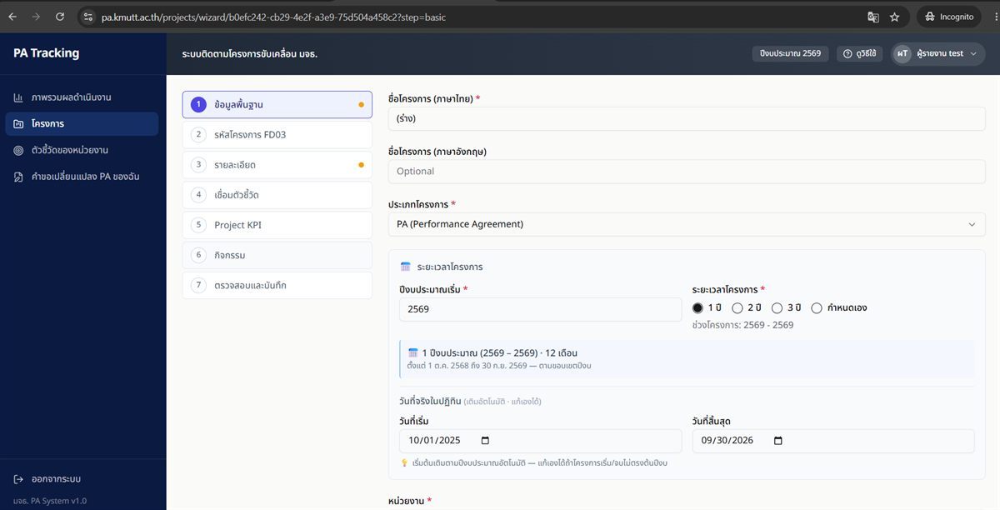
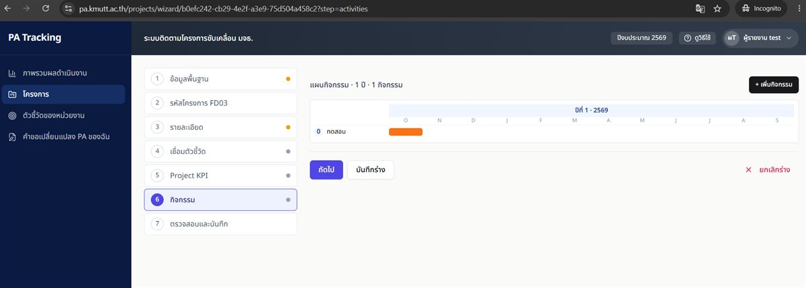
เมื่อบันทึกแล้ว
เปิดโครงการที่ /projects จะเห็น แผนกิจกรรม (ผังเวลา) พร้อมแถบความคืบหน้า และส่วน ติดตามผล KPI โครงการ สำหรับกรอกค่าผลงานรายรอบ
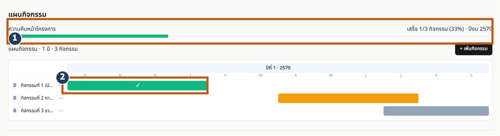
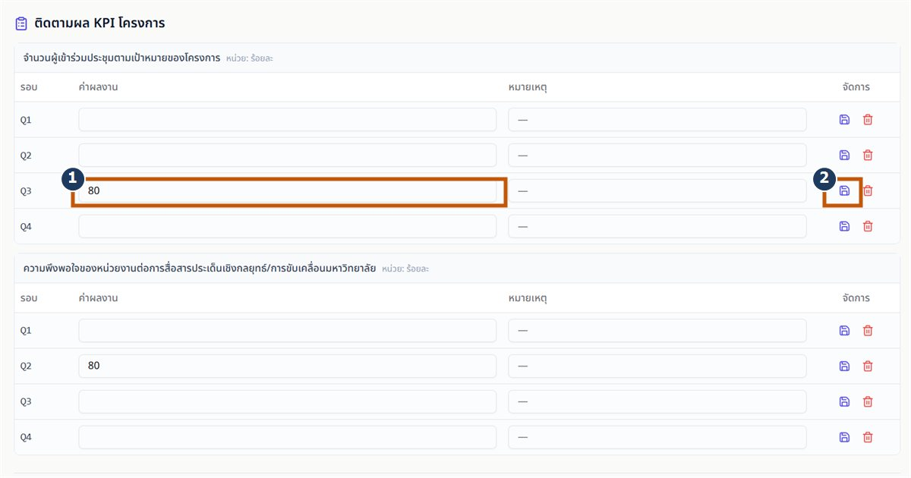
กรอกผลของโครงการ — วันนี้ดูเป็นตัวอย่าง ไม่ต้องยืนยันส่ง
เมื่อโครงการ ใช้งานจริง (พ้นฉบับร่าง) หน้าโครงการจะมีที่กรอกผล 2 อย่าง
- ผล KPI โครงการ
- ตารางรายรอบใต้หัวข้อ "ติดตามผล KPI โครงการ" กรอกค่าผลงานแล้วบันทึกทีละรอบ
- ผลกิจกรรม
- คลิกแถบกิจกรรมในผังเวลาเพื่อเปลี่ยนสถานะ ยังไม่เริ่ม → กำลังดำเนินการ → เสร็จแล้ว ระบบสรุป "ความคืบหน้าโครงการ" เป็นเปอร์เซ็นต์ให้เอง
ต่างจาก M4: M4 คือกรอกผล ตัวชี้วัดของหน่วยงาน (PA) ส่วนนี้คือผล ภายในโครงการ ที่ขับเคลื่อนให้ตัวชี้วัดบรรลุเป้า
สร้างโครงการ ฉบับร่าง ชื่อ "ทดสอบอบรม-<ชื่อ>" แล้วคงไว้เป็นฉบับร่าง
โครงการที่ยังเป็นฉบับร่าง ทำอะไรได้บ้าง?
เฉลย: ฉบับร่างยังไม่ใช้งานจริง แก้/ลบได้อย่างปลอดภัย · ปุ่ม "บันทึกและส่งโครงการ" คือการยืนยันส่งจริง — วันนี้อย่ากด
กรอกผลดำเนินงาน
หัวใจของวงจร — ใช้จริงทุกรอบรายงาน เมื่อต้องบันทึกผลของแต่ละตัวชี้วัด
เป้าหมาย: กรอกผลรายรอบแล้ว บันทึกร่าง ได้เอง และแยกออกว่า "ร่าง" ต่างจาก "ส่งรายงาน" อย่างไร
แบบที่ 1 ผลตัวชี้วัด PA ของหน่วยงาน = โมดูลนี้ (M4) ทำทุกรอบ
แบบที่ 2 ผลภายในโครงการ = ดูที่ M3 · โครงการ ทำเมื่อมีโครงการ
กรอกผลแยกตามรอบ ซึ่งเป็นรายเดือนอย่างเดียว M1–M12 วันนี้ใช้ M9 (มิ.ย.) กรอกค่าเกินเป้าได้ แต่คะแนนตันที่ 100%
- ร่าง
- บันทึกไว้ แก้ได้ ยังไม่ส่ง
- ส่งรายงาน
- ส่งถึง admin แล้วล็อก แก้ไม่ได้จนกว่าจะถูกส่งกลับ
สาธิต — หน้ากรอกผล PA (/progress/[assignmentId])
- จาก "ภาพรวมผลดำเนินงาน" คลิกชื่อตัวชี้วัด
- เลือก รอบ เป็น M9 (มิ.ย.)
- กรอก ผลดำเนินงาน (หน่วย) เป็นตัวเลข แล้วใส่ หมายเหตุ
- กด "บันทึกร่าง" ช่อง แนบเอกสารหลักฐาน จึงปรากฏ
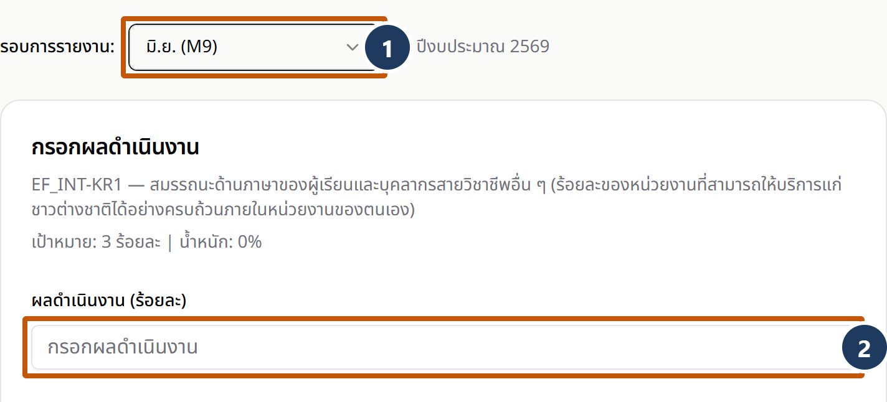
พิมพ์ "ทดสอบอบรม" ในช่องหมายเหตุ แล้วกด "บันทึกร่าง" จนระบบแสดง "บันทึกร่างสำเร็จ"
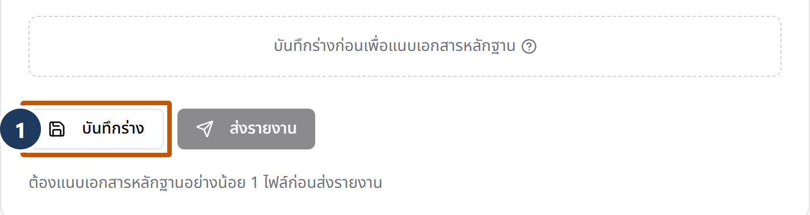
หลังกรอกผลแล้วกด "บันทึกร่าง" สถานะจะเป็นอะไร และส่งถึง admin แล้วหรือไม่?
เฉลย: "บันทึกร่าง" = สถานะ "ร่าง" บันทึกไว้แก้ไขได้ ยังไม่ส่ง · ต้องกด "ส่งรายงาน" จึงจะเข้าคิว admin (วันนี้ฝึกเพียงการบันทึกร่าง)
ติดตามสถานะ & รายงาน
ปลายวงจร — อ่านผลลัพธ์ + สถานะ แล้วรู้ว่าผลแบบไหนเข้ารายงาน ก่อนวนรอบถัดไป
เป้าหมาย: อ่านสถานะได้ และทราบว่าผลแบบใดเข้ารายงาน
เรื่องที่มักสับสนมากที่สุดคือ ป้าย 2 กลุ่ม — "สถานะ" (ขั้นตอนการทำงาน) กับ "ผลลัพธ์" (ไฟเขียว/เหลือง/แดง) เป็นคนละเรื่องกัน
ผลลัพธ์ (ไฟเขียว/เหลือง/แดง)
- บรรลุเป้า≥ 100%
- ใกล้เป้า≥ 80%
- ยังไม่ถึงเป้า< 80%
- ไม่มีข้อมูลยังไม่กรอก
สถานะ (ขั้นตอนการทำงาน)
- ร่างแก้ได้
- รอรีวิวล็อก รอ admin
- อนุมัติแล้วล็อก · ขึ้น PDF
- ส่งกลับแก้ไขแก้ได้
- เฉพาะผลที่สถานะ "อนุมัติแล้ว" เท่านั้นที่ขึ้นรายงาน PDF
- คอลัมน์ "งวด" = รอบล่าสุดที่กรอก
- เมนู "รายงาน" เปิดให้หน่วยงานโหลดข้อมูลของหน่วยงานตัวเองได้แล้ว — Excel (ชุดข้อมูลไว้ทำ pivot ต่อ) และ PDF (สรุปผลดำเนินงาน)
- ไม่มีช่องให้เลือกหน่วยงาน — ระบบล็อกเป็นของหน่วยงานท่านให้อยู่แล้ว
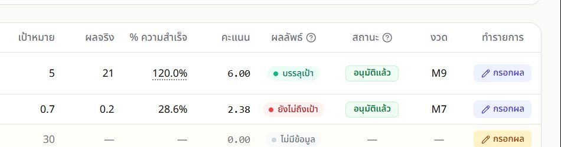
ผลแบบใดที่จะแสดงในรายงาน PDF?
เฉลย: เฉพาะผลที่สถานะ "อนุมัติแล้ว" เท่านั้นที่ขึ้นรายงาน PDF · ผลลัพธ์ (ไฟเขียว/เหลือง/แดง) เป็นคนละแกนกับสถานะ — แม้ผลลัพธ์เป็นสีเขียว แต่หากสถานะยังเป็น "ร่าง" ก็ยังไม่ขึ้นรายงาน
ปัญหาที่พบบ่อย
คำถามที่พบบ่อยขณะใช้งานจริง — คลิกเพื่อดูคำตอบ
ลืมรหัสผ่าน เข้าระบบไม่ได้ ทำอย่างไร?
ที่หน้าเข้าสู่ระบบ กดลิงก์ "ลืมรหัสผ่าน?" → กรอกอีเมล มจธ. → กด "ส่งลิงก์" แล้วเปิดลิงก์ในอีเมล
สำคัญ: ต้องเปิดลิงก์ใน เบราว์เซอร์เดียวกับที่กดขอ — หากเปิดคนละเครื่องหรือคนละเบราว์เซอร์ ระบบจะแสดง "ลิงก์ไม่สามารถใช้ได้ในเบราว์เซอร์นี้…" · หากลิงก์หมดอายุหรือถูกใช้แล้ว สามารถขอลิงก์ใหม่ได้
กรอกผลแล้ว เหตุใดจึงไม่เห็นข้อมูล?
ตรวจสอบ 3 ข้อ:
1. กดปุ่ม "บันทึกร่าง" จนระบบแสดง "บันทึกร่างสำเร็จ" แล้วหรือไม่
2. กำลังดู รอบ (งวด) เดียวกัน กับที่กรอกหรือไม่ — ผลแยกตามรอบ M9 อยู่คนละช่องกับ M8
3. กำลังดูตัวชี้วัดรายการเดียวกันหรือไม่
ผลที่ "บันทึกร่าง" ไว้จะไม่สูญหาย แต่จะยังไม่ขึ้นรายงานจนกว่าจะ "ส่งรายงาน" และ admin "อนุมัติแล้ว"
น้ำหนักรวมไม่ครบ 100% ต้องแก้ไขอย่างไร?
เปิด "ตัวชี้วัดของหน่วยงาน" (/my-pa) — สรุปด้านบนจะเป็นสีเหลืองหากน้ำหนักรวม ≠ 100% → กดเมนู "การดำเนินการ" (จุด 3 จุด) ของตัวชี้วัดที่ต้องการ → เลือกขอแก้น้ำหนัก กรอกค่าใหม่ + เหตุผล → กด "ส่งคำขอ"
คำขอจะขึ้นสถานะ "รอตรวจสอบ" แล้วเข้าคิวให้ผู้ดูแลพิจารณา — ติดตามผลได้ที่เมนู "คำขอเปลี่ยนแปลง PA ของฉัน"
กรอกผลเกิน 100% ได้หรือไม่?
กรอกได้ ให้กรอกค่าจริงเสมอ แต่คะแนนที่ระบบนับให้สูงสุดคือ 100% ทำเกินเป้าไม่ได้คะแนนเพิ่ม
"สถานะ" กับ "ผลลัพธ์" ต่างกันอย่างไร?
"สถานะ" = ขั้นตอนการทำงาน (ร่าง / รอรีวิว / อนุมัติแล้ว / ส่งกลับแก้ไข)
"ผลลัพธ์" = ไฟสีบอกว่าทำได้กี่ % (เขียว = บรรลุเป้า / เหลือง = ใกล้เป้า / แดง = ยังไม่ถึงเป้า / เทา = ไม่มีข้อมูล)
เป็นคนละแกนกัน — แม้ผลลัพธ์เป็นสีเขียว แต่หากสถานะยังเป็น "ร่าง" ก็ยังไม่เข้ารายงาน
เมื่อผลถูก "ส่งกลับแก้ไข" ต้องทำอย่างไร?
เปิดตัวชี้วัด/รอบนั้น จะเห็นข้อความ "เหตุผลที่ส่งกลับ:" แนบมา → แก้ไขตามเหตุผล → กด "ส่งรายงาน" อีกครั้งเพื่อส่งกลับเข้าคิวรีวิว
สถานะ "ส่งกลับแก้ไข" แก้ไขได้ (ต่างจาก "รอรีวิว"/"อนุมัติแล้ว" ที่ล็อกไว้) · หากยังพบปัญหา โปรดติดต่อทีมผู้ดูแลที่ท้ายหน้า
สรุป & อภิธานศัพท์
3 ขั้นตอนสำคัญที่ควรจดจำ:
นำกลับไปใช้ — แต่ละรอบทำอะไรบ้าง
- เข้าระบบ แล้วเปิดดู PA ของหน่วยงาน
- ดูว่ารอบนี้มีตัวชี้วัดใดยังไม่ได้กรอก
- กรอกผลจริง พร้อมแนบหลักฐาน
- บันทึกร่างไว้ก่อนได้ — แก้ไขได้
- พร้อมแล้วจึงกด "ส่งรายงาน"
- ตรวจ ผลลัพธ์ และ สถานะ ของแต่ละตัวชี้วัด
- มีเหตุต้องแก้เป้า/น้ำหนัก → ส่งคำขอเปลี่ยน PA
- ขึ้นรอบถัดไป — วนทำซ้ำ
อภิธานศัพท์
ขอความช่วยเหลือ
ทีมผู้ดูแลระบบ PA · ระบบจริงที่ pa.kmutt.ac.th
- นายทยากร มหกรเพชร — tayakorn.maha@kmutt.ac.th · โทร. 9355
- นางอัจฉรียา ทองสัมฤทธิ์ — achariya.ton@kmutt.ac.th · โทร. 8177
- นางสาวภัทรนันท์ สงวนวัฒนารักษ์ — pattaranan.sang@kmutt.ac.th · โทร. 9370